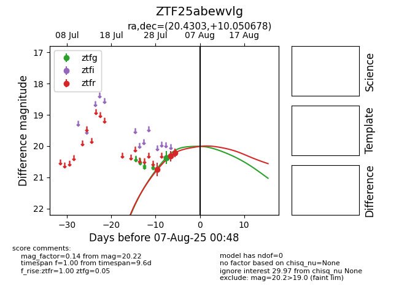

Target ZTF25abewvlg at 2025-08-07 06:30, see:
FINK: fink-portal.org/ZTF25abewvlg
Lasair: lasair-ztf.lsst.ac.uk/objects/ZTF25abewvlg
ALeRCE: alerce.online/object/ZTF25abewvlg
alt names
ZTF25abewvlg (ztf,fink)
coordinates:
equatorial (ra, dec) = (20.4303,+10.05068)
galactic (l, b) = (135.1247,-52.10269)
photometry
last ztfg=20.23, ztfr=20.22
3 ztfg, 3 ztfr detections
